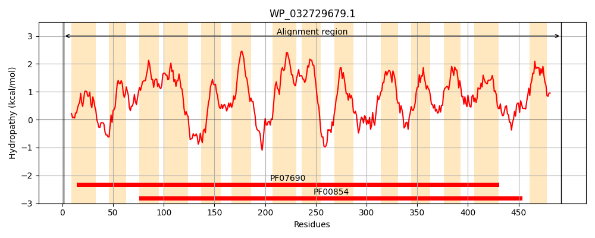
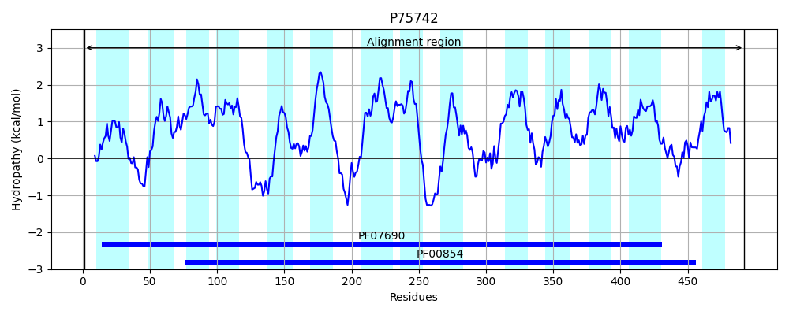
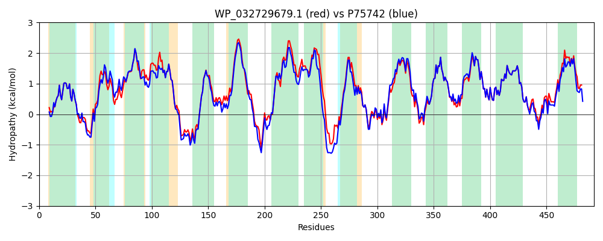

Hit Accession: P75742
Hit TCID: 2.A.17.1.4
Hit Description: gnl|BL_ORD_ID|11400 gnl|TC-DB|P75742|2.A.17.1.4 Inner membrane transporter ybgH OS=Escherichia coli (strain K12) GN=ybgH PE=1 SV=1
Mach Len: 492
e:0.000000
Query TMS Count : 14
Hit TMS Count: 14
TMS-Overlap Score: 13.500000
Predicted Substrates:CHEBI:7990;peptide
BLAST Alignment:
Score: 2195 , Bit scores: 850 bits, E-value: 0.0e+00, Alignment length: 492, Percentage identity: 85
Query: 1 MKTTSSQPRAIYYVVALQIWEYFSFYGMRALLILYLTNQLKYDDNHAYALFSAYCSLVYVTPILGGYLADKLLGNRMAVMLGALLMAIGHLVLGASETAPVFLYLSLAIIVCGYGLFKSNVSCLLGELYEPADPRRDGGFSLMYAAGNIGSIIAPIACGYVQEEYSWAMGFALAAIGMVAGLVIFLCGNRHFQHTAGVNRQALCARRFLLPNWGWLLVLLVTAPLLIAVLFWQEWSVYALIVATVIGLAVLARIYLRAETDKQRKDLRLIVVLTAFSLLFWAFAQQGGSSISLYIDRFVNRHIMSYEVPTAMFQSVNAFAVMLCGMVLAWLVKESVGGNRTVRIWGKFALGLGLMSAGFCILTLSARWSAAYGQSSMPLMVLGLAVMGFAELFIDPVAMSQITRIEIPGVTGVLTGIYMLLSGAIANYLAGVIADQTSQASFDAAGAVNYSIDAYIKVFSQITWGALACVGVVLVIWLYHSLKVRTGRLAVE 492
M +SQPRAIYYVVALQIWEYFSFYGMRALLILYLTNQLKY+D HAY LFSAYCSLVYVTPILGG+LADK+LGNRMAVMLGALLMAIGH+VLGASE P FLYLSLAIIVCGYGLFKSNVSCLLGELYEP DPRRDGGFSLMYAAGN+GSIIAPIACGY QEEYSWAMGF LAA+GM+AGLVIFLCGNRHF HT GVN++ L A FLLPNWGWLLVLLV P LI +LFW+EWSVYALIVAT+IGL VLA+IY +AE KQRK+L LIV LT FS+LFWAFAQQGGSSISLYIDRFVNR + Y VPTAMFQS+NAFAVMLCG+ LAW+VKESV GNRTVRIWGKFALGLGLMSAGFCILTLSARWSA YG SS+PLMVLGLAVMGFAELFIDPVAMSQITRIEIPGVTGVLTGIYMLLSGAIANYLAGVIADQTSQASFDA+GA+NYSI+AYI+VF QITWGALACVG+VL+IWLY +LK R LA+E
Sbjct: 1 MNKHASQPRAIYYVVALQIWEYFSFYGMRALLILYLTNQLKYNDTHAYELFSAYCSLVYVTPILGGFLADKVLGNRMAVMLGALLMAIGHVVLGASEIHPSFLYLSLAIIVCGYGLFKSNVSCLLGELYEPTDPRRDGGFSLMYAAGNVGSIIAPIACGYAQEEYSWAMGFGLAAVGMIAGLVIFLCGNRHFTHTRGVNKKVLRATNFLLPNWGWLLVLLVATPALITILFWKEWSVYALIVATIIGLGVLAKIYRKAENQKQRKELGLIVTLTFFSMLFWAFAQQGGSSISLYIDRFVNRDMFGYTVPTAMFQSINAFAVMLCGVFLAWVVKESVAGNRTVRIWGKFALGLGLMSAGFCILTLSARWSAMYGHSSLPLMVLGLAVMGFAELFIDPVAMSQITRIEIPGVTGVLTGIYMLLSGAIANYLAGVIADQTSQASFDASGAINYSINAYIEVFDQITWGALACVGLVLMIWLYQALKFRNRALALE 492 | Protein Hydropathy Plots: |
|---|
|  |  |
Pairwise Alignment-Hydropathy Plot:
|
|---|
|  |